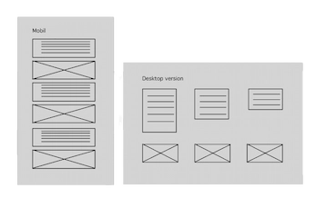
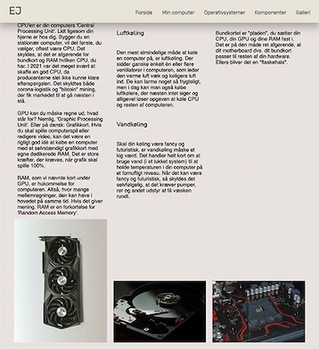
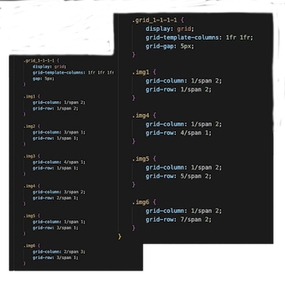
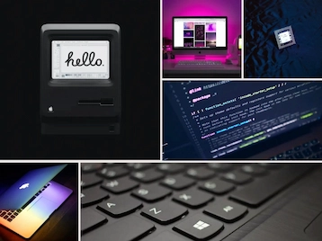

I forbindelse med studiestartsprøven har jeg skabt en responsiv hjemmeside ved brug af HTML og
CSS.
Link til Studiestartsprøven her
Inden jeg begyndte at kode, har jeg blandt andet lært at bruge layoutdiagrammer, hvilket har
givet
mig
grundlæggende
viden om, hvordan man strukturerer og organiserer elementer på digitale grænseflader for at opnå
en
ønsket
brugeroplevelse. Efter at have lært, hvordan man anvender layoutdiagrammer, har jeg brugt denne
viden
til at
skabe
hurtige prototyper ved hjælp af Figma. Disse prototyper er baseret på layoutdiagrammer og
hjælper
mig
med at
evaluere og
teste mine designidéer. Derudover har jeg implementeret brugercentrerede designprincipper for at
skabe
grænseflader, der
imødekommer brugerbehov og forventninger.


Jeg har også opnået grundlæggende viden om principperne for gridlayout, herunder forståelse
af
rækker og kolonner.
Desuden har jeg lært, hvordan man skaber responsivt design ved hjælp af gridlayout, så det
kan
tilpasse sig forskellige
enheder og skærmstørrelser. Efter at have lært dette, implementerede jeg det ønskede layout
ved
at
skrive og forstå CSS
Grid-kode. Jeg har udviklet færdigheder i at skrive effektiv og struktureret CSS Grid-kode
for
at
opnå de ønskede
layouteffekter og optimere brugeroplevelsen.
I løbet af dette modul har jeg opnået grundlæggende viden om de mest anvendte redskaber
inden
for
multimediedesign. Jeg
har fået indsigt i nøglebegreber inden for design af digitale brugergrænseflader, produktion
af
digitalt indhold,
digital kommunikation og responsivt webdesign. Denne viden har jeg taget med mig til at lave
alle
andre
lignende opgaver i løbet
af resten af semester.

